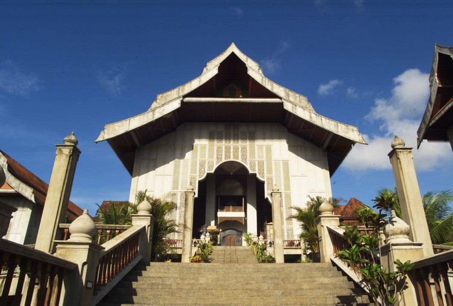 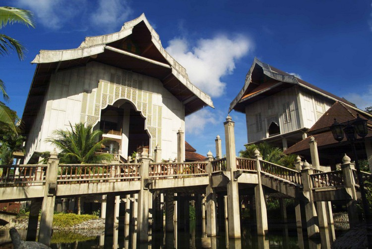 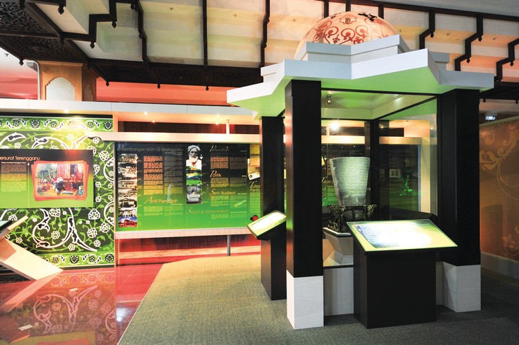
此座壯觀的大廈位於LOSONG FERRY路。它擁有一座主要博物館，館內共有10間展示廳、一座漁業博物館、一座海事博物館及4座傳統皇宮。此處還有一座植物園及草藥園。
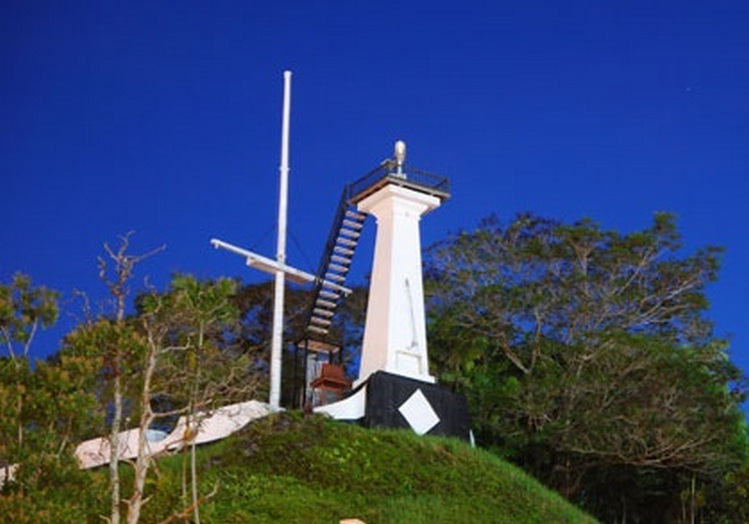
在這座位於KOTA路的山丘上，能夠瞭望整個城鎮。山上有一座要寨，建於1830年，於1831年至1876年之間，充當防禦之用。此地有幾尊大炮、一座古堡、一支旗竿及一尊提醒村民開齋的大鐘。
 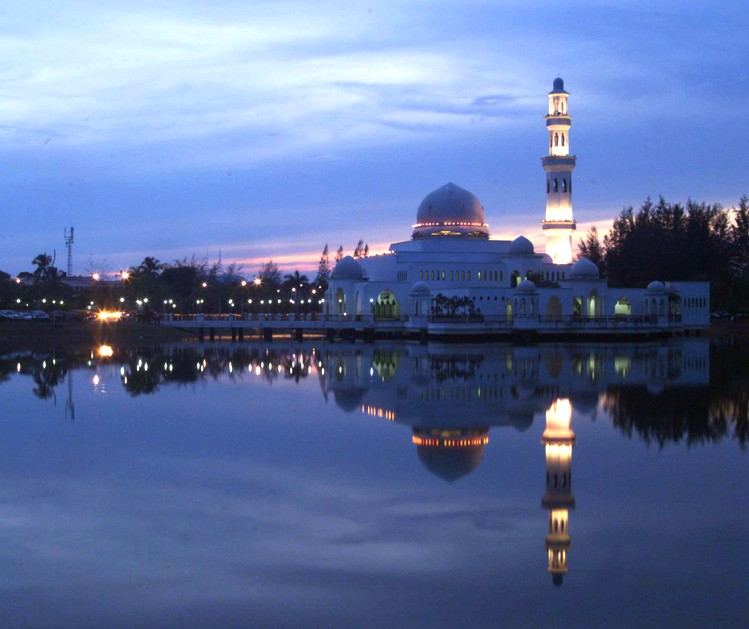
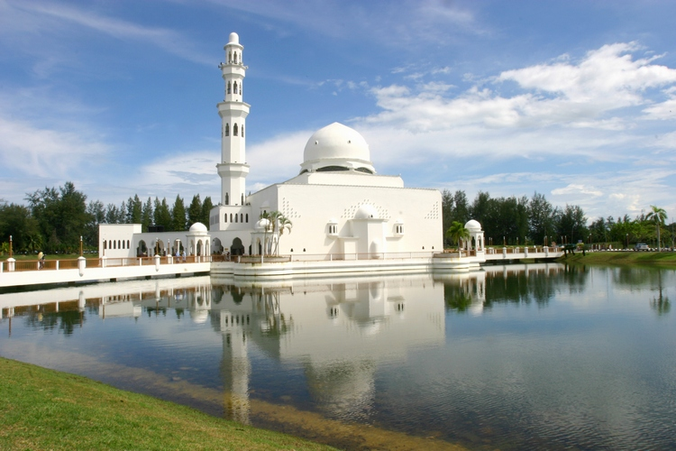
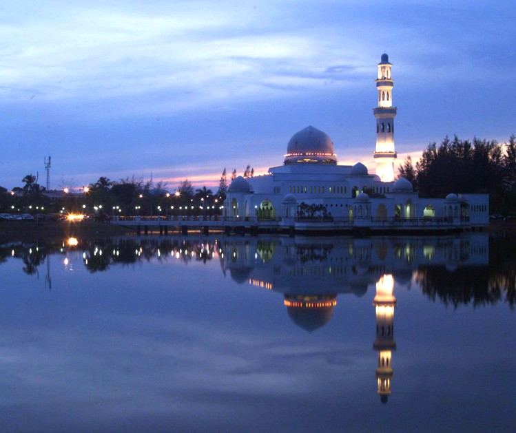
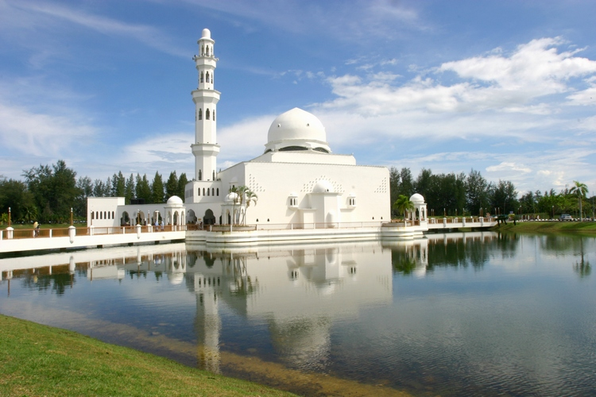
在登嘉樓河河口處，站立了一座“水上清真寺”，那是TENGKU TENGAH ZAHARAH清真寺。此座清真寺結合了摩爾式及現代化的建築風格，夜晚時分，燈火通明，相當耀眼迷人。
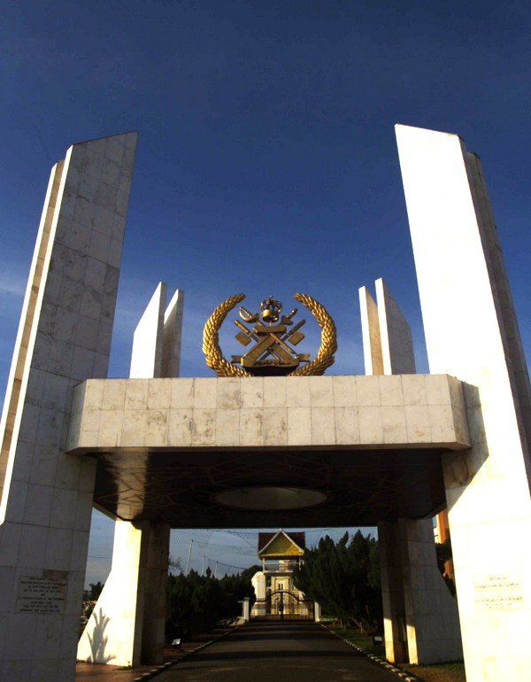 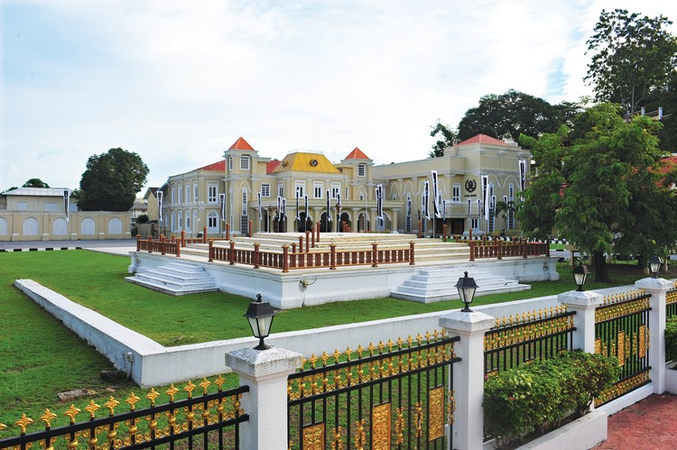 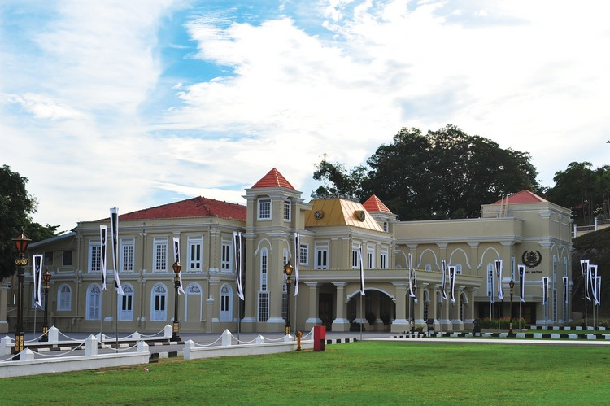

公主山之下有一座MAZIAH皇宮，一般相信建於蘇丹賽納阿比丁三世統治時期。此皇宮建於1897年，是為取代第二次世界大戰時被焚燒的HIJAU皇宮。 這座集傳統及現代建築風格於一身的建築物，是登加奴人民所呈現的建築藝術技巧一個絕佳例子。MAZIAH皇宮是舉行皇室生日慶典、皇室婚禮及州政府官方活動的重要地點。
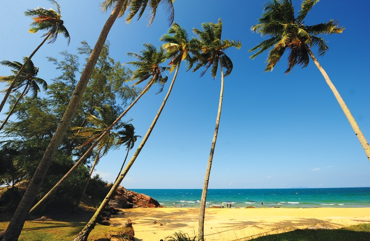 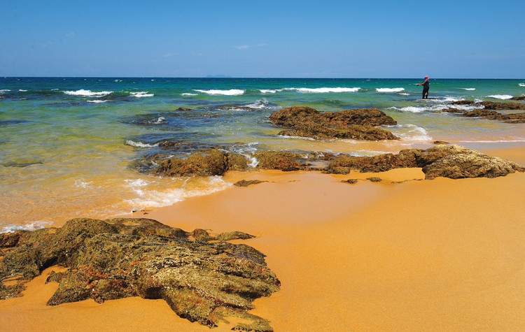
蘭道阿邦距離瓜拉登加奴以南60公里，這裡是著名的海龜(棱皮龜)上岸下蛋的地點，(全世界只有六處地點)介於每年的5月至9月。 這類大海龜，最長可達2.5公尺，最重可達375公斤，相當龐大，也很迷人。不過，遊客觀賞海龜下蛋必須遵守一些條規，以避免干擾到它們。觀賞海龜下蛋的最佳時刻是月圓之夜及最漲潮的時候。
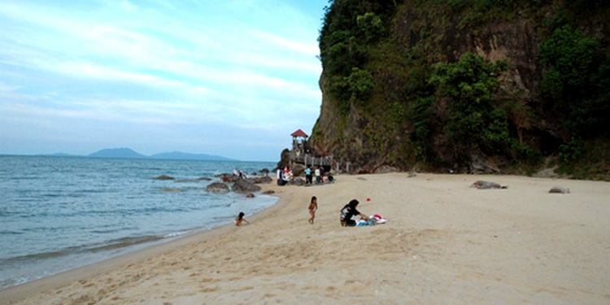
海灘位於瓜拉登加奴以北140公里，距離勿述BESUT只有幾公里。這是一個游泳、潛水及滑浪的好地點。 此海灘由一條長長的白色沙灘所組成，可以觀賞南中國海的怡人美景。其附近有幾個攀岩山洞，遊客可以繞小道上去進行探險之旅。
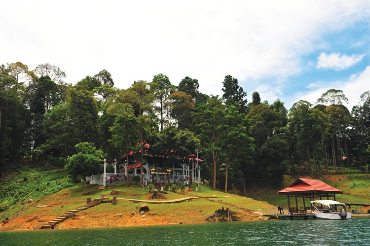 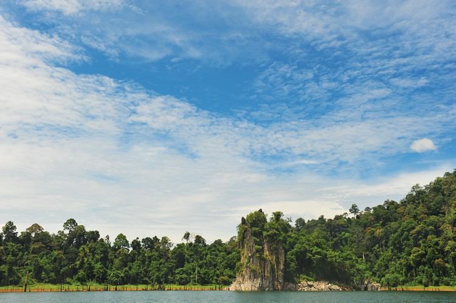
肯逸湖距離瓜拉勿浪10公里，距離瓜拉登加奴大約55公里，是亞洲最大的人造湖。 湖的總面積有369平方公里，此地擁有一座馬來西亞最大的水力發電水壩。當水位上升時，大部份的山丘還露出水面，形成了許多人造湖。 肯逸湖被濃密的熱帶森林所包圍，此地是大自然愛好者、垂釣者、攝影愛好者及愛好探險旅遊者，最佳的旅遊選擇。這裡亦備有釣魚、游泳、划船、帆船及森林跋涉等相關器材與配備。 湖內還有各式各樣的淡水魚，如：鯰魚BAUNG、TOMAN魚、KELISA魚及LAMPAM魚等。住宿方面這裡備有船屋、水上渡假小屋及湖邊渡假屋等。
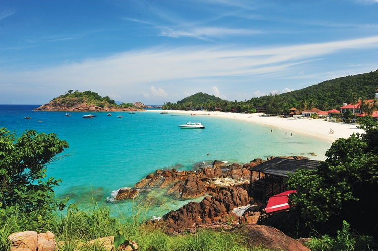 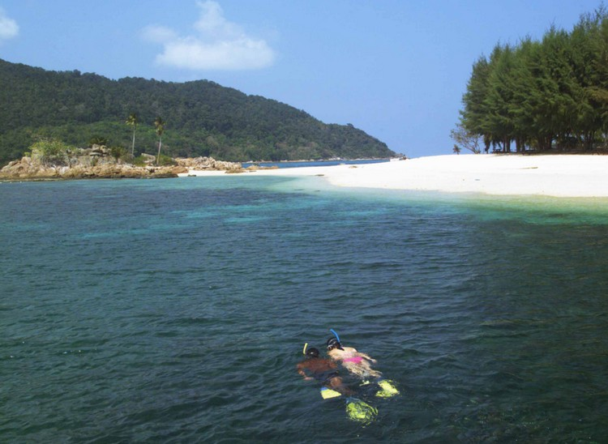 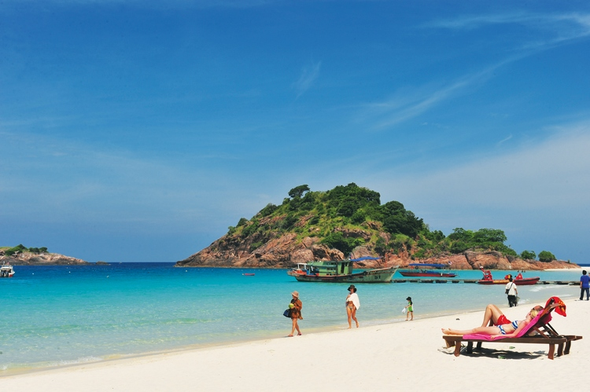 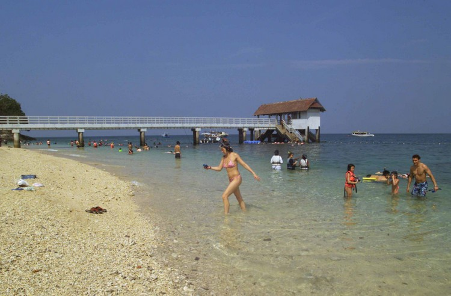 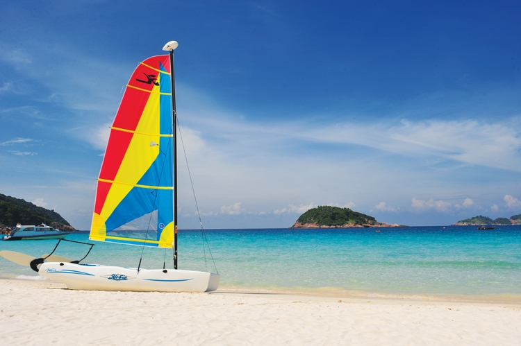
樂浪島是馬來西亞其中一座最漂亮的島，距離瓜拉登加奴岸外大約50公里。島上周圍的海水清澈見底，白色沙灘連接到一大片的森林陸地。風和日麗時，這裡簡直是潛水天堂。 此地亦有許多處珊瑚礁供觀賞，這些珊瑚美得令人驚嘆。樂浪島的海底世界非常多姿多彩，部份地區還有許多海洋動物浮游在海面上。 樂浪島提供許多玩樂活動，如：游泳、深海潛水、淺灘潛水及森林跋涉等。島上的交通設施並沒有建設得很好，所以，從島的一端要到另一端，還是必須靠船隻才行。 住宿的安排，從最簡單的露營設施到豪華渡假屋等。這裡被政府指定為海洋保留區，遊客有機會觀賞珊瑚及海底生物的展示和介紹。樂浪島的直徑3.2公里範圍內，不允許進行釣魚及捕魚活動。
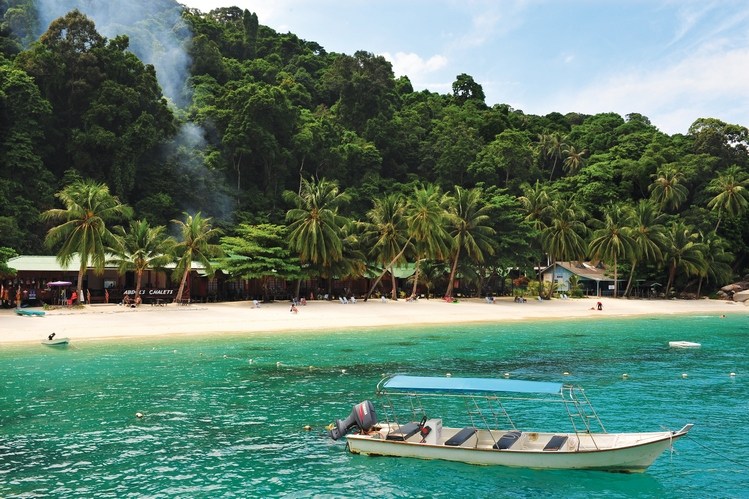 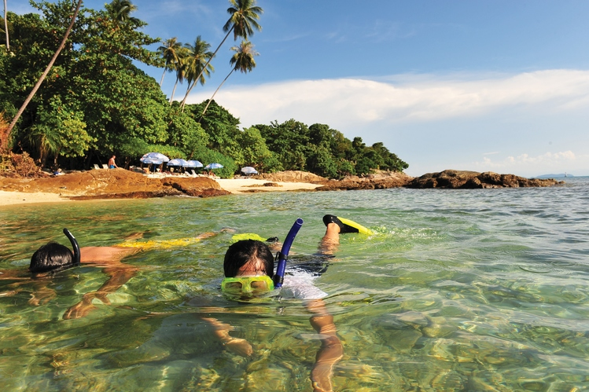 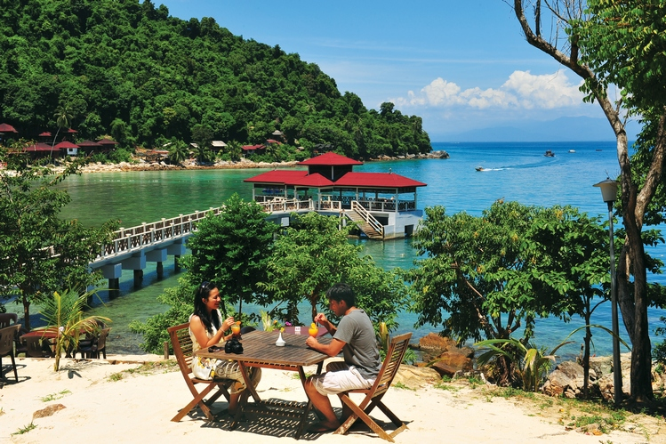
停泊島海洋公園位於登加奴岸外21公里處，它是由兩座島所組成，一是PULAU PERHENTIAN BESAR﹙大﹚，另一是PULAUPER HENTIAN KECIL﹙小﹚。 這兩座島皆被原始森林及白色沙灘上的棕櫚樹團團包圍。它們的水域內有著許多處珊瑚礁園。 這兩座島是放鬆身心的最理想地點。 對於活躍的旅遊者，這裡還有游泳、深海潛水、淺灘潛水、深海垂釣、滑浪、玩帆船及划船等活動。從瓜拉勿述乘船到此，約需一小時的航程。
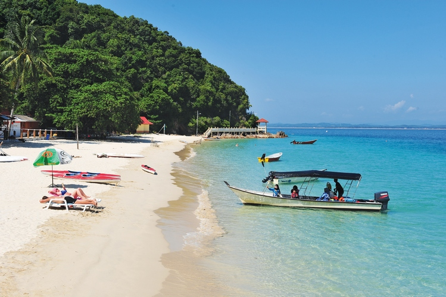 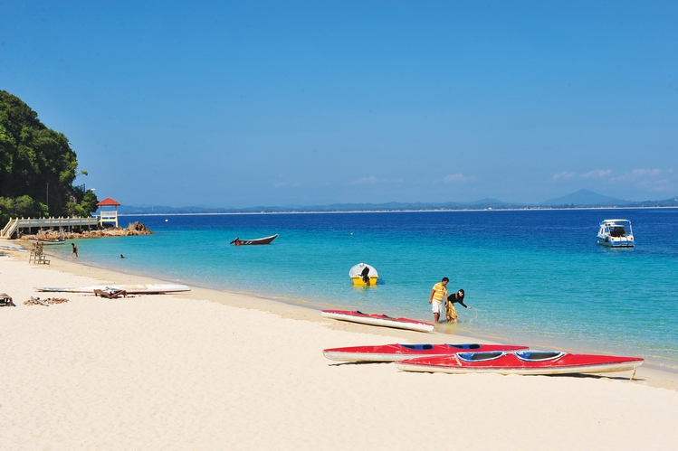 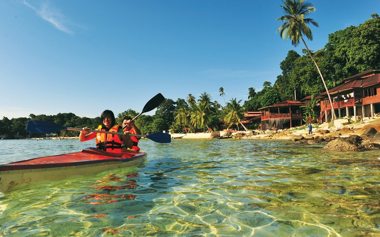
棉花島以清澈翠綠色的海水及長滿婆娑起舞的棕櫚樹之白色沙灘，而聞名遐邇。這裡是另一個耀眼的海底世界及珊瑚礁區。 此處的海域，完全未受汙染，非常適合潛水。同樣的，這裡也是潛水、滑浪、划獨木舟及划船等。棉花島距離馬江大約6公哩，乘船約需30分鐘。